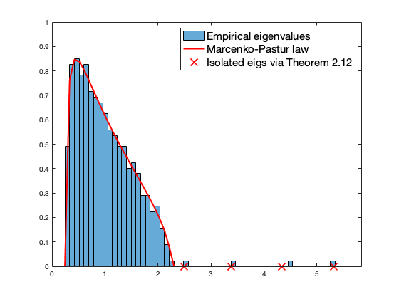
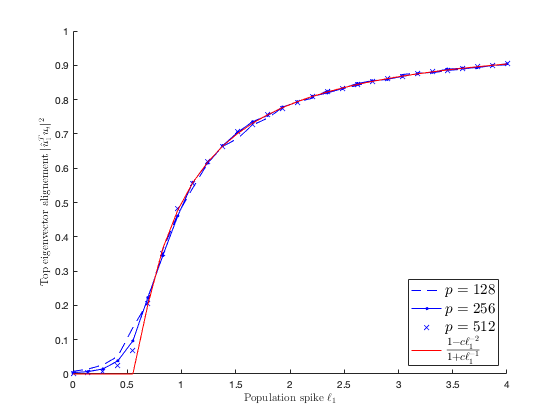

Section 2.5: Spiked models
This page containssimulations in Section 2.5
Contents
Empirical eigenvalues of  versus the Marcenko-Pastur law
versus the Marcenko-Pastur law
together with isolated empirical eigenvalues predicted by Theorem 2.12
close all; clear; clc coeff = 5; p = 100*coeff; n = 400*coeff; c = p/n; Z = randn(p,n); eig_P = [1,2,3,4]; P = diag([eig_P, zeros(1,p-length(eig_P))]); C = eye(p) + P; X = C^(1/2)*Z; SCM = X*(X')/n; eigs_SCM = eig(SCM); edges=linspace(min(eigs_SCM)-.1,max(eigs_SCM)+.1,60); a = (1-sqrt(c))^2; b = (1+sqrt(c))^2; isolated_eigs = 1+eig_P+c*(1+eig_P)./eig_P; isolated_eigs(eig_P<=sqrt(c)) = NaN; figure histogram(eigs_SCM,edges, 'Normalization', 'pdf'); hold on; mu=sqrt( max(edges-a,0).*max(b-edges,0) )/2/pi/c./edges; plot(edges,mu,'r', 'Linewidth',2); plot(isolated_eigs,zeros(length(isolated_eigs),1),'rx', 'MarkerSize',10); legend('Empirical eigenvalues', 'Marcenko-Pastur law', 'Isolated eigs via Theorem 2.12', 'FontSize', 15) axis([0 max(eigs_SCM)+.5 0 1]);
Theorem 2.13: alignment of isolated eigenvectors
close all; clear; clc coeff_loop = [1 2 4]; popu_spike_loop = linspace(0,4,100); nb_average_loop = 1; eigvec_alignment = zeros(length(coeff_loop), length(popu_spike_loop), nb_average_loop); for i = 1:length(coeff_loop) for j = 1:length(popu_spike_loop) for average_loop = 1:nb_average_loop p = 100*coeff_loop(i); n = 300*coeff_loop(i); c = p/n; eig_P = popu_spike_loop(j); Z = randn(p,n); %P = eig_P*ones(p,p)/p; P = diag([eig_P, zeros(1,p-length(eig_P))]); C = eye(p) + P; X = C^(1/2)*Z; SCM = X*(X')/n; [hat_u,~] = eigs(SCM,1); %eigvec_alignment(i,j,average_loop) = (sum(hat_u))^2/p; eigvec_alignment(i,j,average_loop) = (hat_u(1))^2; end end end figure hold on; plot(popu_spike_loop,squeeze(mean(eigvec_alignment(1,:,:),3)),'b--'); plot(popu_spike_loop,squeeze(mean(eigvec_alignment(2,:,:),3)),'b.-'); plot(popu_spike_loop,squeeze(mean(eigvec_alignment(3,:,:),3)),'b.'); plot(popu_spike_loop,(1-c*popu_spike_loop.^(-2))./(1+c*popu_spike_loop.^(-1)),'r') axis([.1 4 0 1]);